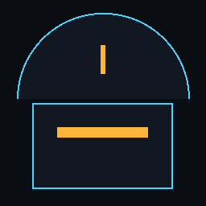
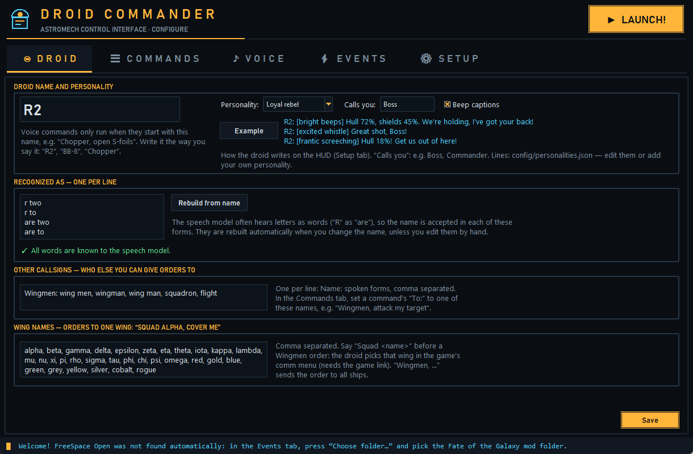
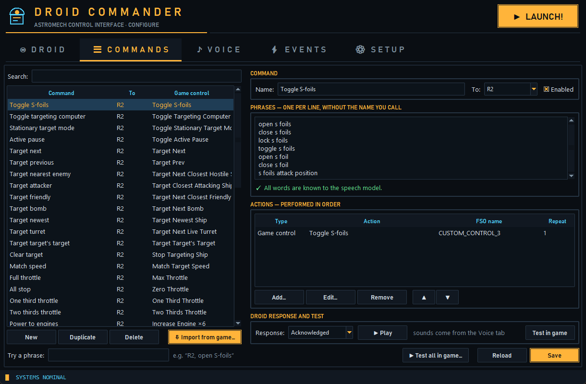
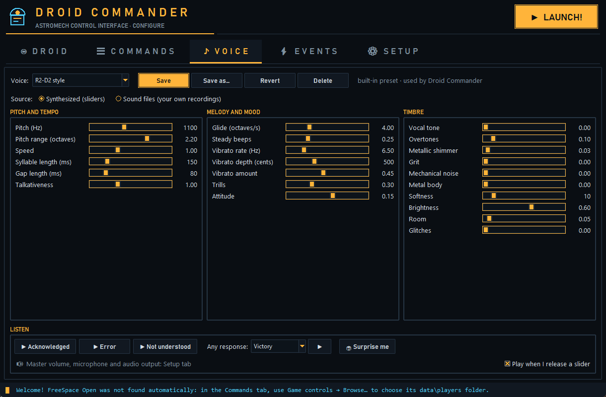
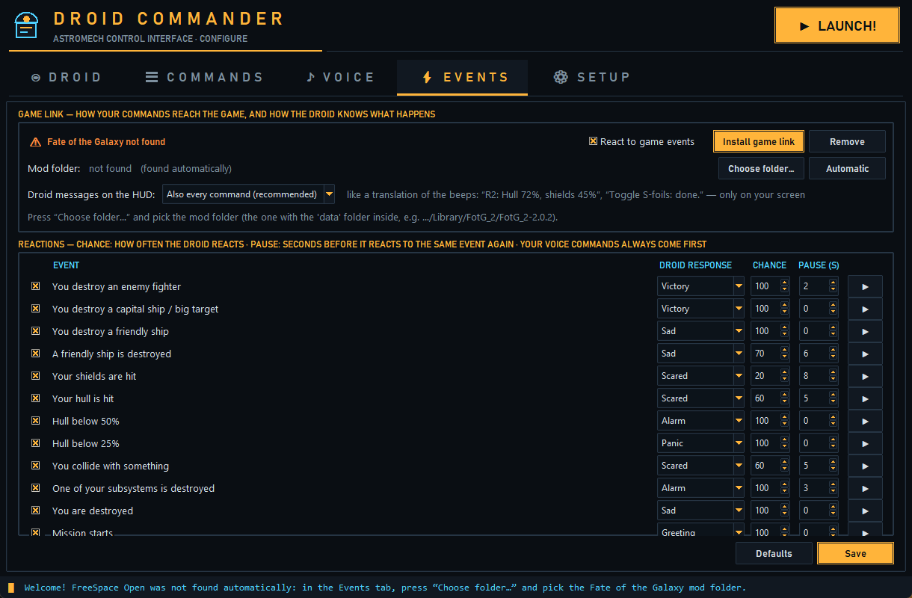
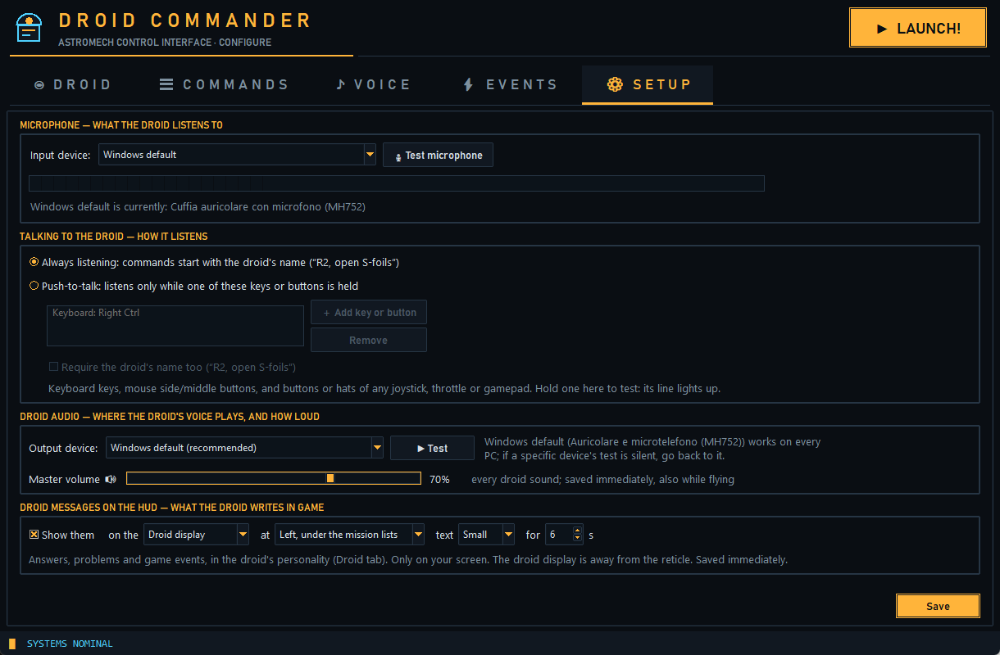

Talk to your astromech droid in Fate of the Galaxy. It presses the keys, answers with droid beeps, reacts to the battle and relays your orders to your wingmen.
Droid Commander listens to your voice while you fly. Start a sentence with your droid's name — "R2, open S-foils" — and it opens them, then answers with a droid beep. There is no key setup: a small script inside the game, the game link, works the game's controls directly, whatever keys or joystick buttons you use. Speech recognition runs entirely on your PC: nothing is sent to the internet.
What it can do:
Everything is included: the speech model, the droid voices and the game link script. Your
settings are stored in %APPDATA%\DroidCommander, so they survive updates and
reinstalls.
Four steps and you're flying:
…\kn_portable\Library\FotG_2\FotG_2-2.0.2. If the game is running, close and restart it:
it loads the game link when it starts.Every command starts with who you're talking to, followed by the order:
| You say | Who receives it |
|---|---|
| "R2, target nearest enemy" | your droid (its name is set in the Droid tab) |
| "Wingmen, cover me" | all your wingmen |
| "Squad Alpha, attack my target" | only Alpha wing |
The name is what tells the droid you're talking to it and not to your friends on voice chat. Sentences that don't start with a known name are ignored.
Choose one in the Setup tab:
In the game, wingman orders go through the comm menu Give Command To (1 Ships · 2 Wings · 3 All Ships · 4 Reinforcements). Droid Commander navigates it for you:
| You say | The droid picks |
|---|---|
| "Wingmen, cover me" | the cover me order, then All Fighters |
| "Squad Alpha, cover me" | the order, then Wings, then Alpha |
| "Alpha wing, cover me" | the same as "Squad Alpha" |
Available orders: attack my target, disable my target, disarm my target, destroy subsystem, protect my target, ignore my target, form up, cover me, engage enemy, depart.
The droid picks the wing in the comm menu by its name, so it always reaches the right wing. "Squad Gold" also finds a wing called "Gold Aurek" when it's the only Gold wing (say "Squad Gold Besh" when there are two).
The names you can say are listed in the Droid tab under Wing names (Greek letters and colours by default). Add the names used by your favourite missions.
With the game link installed, the droid can check your ship and answer with a happy (yes / all good) or worried (no / bad news) beep — and writes the answer among the HUD messages ("R2: 3 hostile ships left"):
| Ask | The droid checks |
|---|---|
| "R2, are you OK?" | hull and shields — a panicky answer if the hull is critical |
| "R2, are we hit?" / "damage report" | whether you've been hit recently and the hull state |
| "R2, how are the shields?" | shield strength |
| "R2, did we get him?" | whether you destroyed something in the last seconds |
| "R2, are we clear?" | whether any enemies are left |
| "R2, is the target damaged?" | your target's hull |
| "R2, do we have energy?" | weapon energy |

Wingmen: wing men, wingman, squadron, flight.Press Save: a running Droid Commander uses the new name right away.

Each line shows the command, who it's addressed to (To) and the game control it works, with the name Fate of the Galaxy gives it ("Toggle S-foils"). Keys don't matter: the game link works the control itself. New, Duplicate and Delete manage the list; Import from game… lists all the game's controls (the mod's own first) and turns the ones you tick into commands, phrases included.
▶ Test all in game… (during a mission): Check names asks the game which controls it knows; Press all presses every command, one every 2 s. Try a phrase shows which command a sentence triggers. Press Save when done.

The master volume is in the Setup tab.

Install game link adds one small script to the mod. It is how your voice commands reach the game: it works their game controls from inside the game, exactly as if you pressed their key — whatever your keyboard layout, also for controls bound only to a joystick. It also tells Droid Commander what happens in the game. Restart the game after installing or updating: it loads the script when it starts (the tab warns when the game still runs an older copy).
FG_Core package). If it isn't found,
press Choose folder… and pick the mod folder, e.g.
…\Library\FotG_2\FotG_2-2.0.2. Automatic goes back to automatic detection.For each event — a kill, a friendly ship lost, a hit on shields or hull, low or critical hull, a collision, a lost subsystem, your death, mission start and end — choose the droid response (victory, sad, scared, alarm, panic…), the chance it reacts (100 = always) and the pause in seconds before it reacts to the same event again. Your voice commands always come first.

Press Save. Microphone, listening mode and output are used from the next LAUNCH!.
Press LAUNCH! to start listening. If something is unsaved, Droid Commander asks to save it first. The window changes to a compact cockpit display:
Minimize sends it to the taskbar — it keeps listening. Stop · Configure stops listening and brings back the editor. Changes you save in the editor (names, commands, reactions, volume, voice) are picked up by a running droid by itself.
The game link also works in multiplayer, in fair-play mode: the droid only knows what your HUD shows. For example, "are we clear?" counts only the enemies your radar can see — no stealth ships, nothing out of sensor range. Everything else it reports (hits, kills, hull, shields, energy, your target) is already on your HUD.
Voice commands work the same controls you would press yourself. Ask your server admins whether they allow tools like this before using it online.
| Problem | What to do |
|---|---|
| The droid hears nothing | Setup tab → Test microphone. Pick the right input device, speak closer, check the microphone isn't muted in Windows. |
| Many commands are "not understood" | Say the phrase exactly as written in the Commands tab, then add your own wording as an extra phrase. Use a headset so the game sound doesn't reach the microphone. |
| It understands but gives the error beep | The game link isn't answering: a mission must be running, the game link installed (Events tab), and the game restarted after installing or updating it. The active view's log says the reason. |
| A command does something unexpected | Fate of the Galaxy may use that control for something else (for example the old "glide" is its active pause): check the Game control column in the Commands tab. |
| I can't hear the droid | Setup tab → output Windows default → ▶ Test. Check the master volume and the Windows volume mixer. |
| The droid doesn't react to the game | Events tab: install or Update game link, restart the game, start a mission. If Fate of the Galaxy isn't found, use Choose folder…. "Last game event received" shows whether events are arriving. |
| "Squad Alpha…" gives the error beep | That wing isn't in the mission or has no ships left, or the game link isn't installed. Check the name is in Droid tab → Wing names. |
| Questions always get a puzzled beep | The droid can only answer during a mission, with the game link installed. |
| Push-to-talk doesn't react | Setup tab: hold the button and check its line lights up. Choose Push-to-talk mode and Save, then LAUNCH! again. |
The commands that come with Droid Commander. Start each one with your droid's name ("R2, …") unless it's addressed to the wingmen. All of them can be changed in the Commands tab.
| Command | Say (examples) |
|---|---|
| Toggle S-foils | open s-foils · close s-foils · lock s-foils |
| Toggle targeting computer | targeting computer |
| Stationary target mode | stationary target mode |
| Active pause | active pause · pause the game |
| Target next / previous | next target · previous target |
| Target nearest enemy | target nearest enemy · nearest enemy |
| Target attacker | who is shooting me · target my attacker |
| Target friendly | target nearest friendly |
| Target bomb | target next bomb · target missile |
| Target newest | target newest ship · target new arrival |
| Target turret | target next turret |
| Target target's target | target its target |
| Clear target | clear target · stop targeting |
| Match speed | match speed · match target speed |
| Throttle | full throttle · punch it · all stop · one third throttle · two thirds throttle |
| Full power | full power to engines / weapons / shields |
| Boost | boost engines / weapons / shields |
| Balance power | balance power · reset power |
| Shields | equalize shields · shields front · shields rear |
| Engage hyperdrive | engage hyperdrive · jump to light speed |
| Questions | are you OK · are we hit · how are the shields · did we get him · are we clear · is the target damaged · do we have energy |
| Order | Say |
|---|---|
| Attack | attack my target |
| Disable / disarm | disable my target · disarm my target |
| Attack subsystem | destroy subsystem |
| Protect / ignore | protect my target · ignore my target |
| Form up | form on my wing · form up |
| Cover | cover me |
| Engage | engage enemy · engage at will |
| Depart | depart · jump out |
%APPDATA%\DroidCommander to remove your settings and voices too.Droid Commander 1.0.0 · Speech recognition by Vosk (offline). Star Wars is a trademark of Lucasfilm Ltd. Fate of the Galaxy is a fan-made mod for FreeSpace Open. This is an unofficial fan tool.